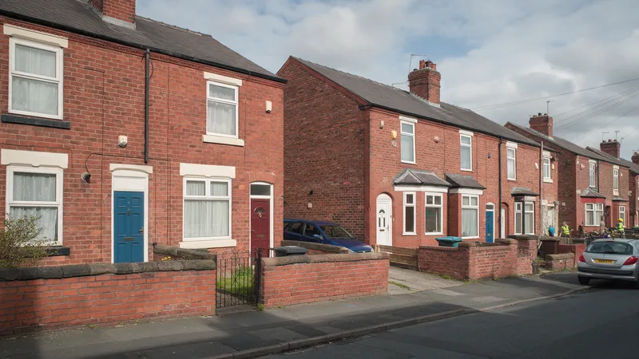

Sample coverage
Locksmith in Eccles.
Lockouts, lost and snapped keys, lock changes, uPVC doors that will not lock, repairs after a break in, window locks and key cutting in Eccles and round about. Eccles is a real town. Latchwick Locksmiths is not a real firm, and this is sample coverage for a demo site.
What we get called to in Eccles
Mostly the same two things as everywhere: somebody shut out of their own house, and a door that has stopped locking properly. What changes from town to town is the doors. In Eccles it tends to be older terraces and a lot of uPVC front doors fitted twenty odd years ago, which is exactly when a gearbox starts giving up.
So a visit here usually starts the same way. What sort of door, what it is doing, and whether the easy answers have been tried. Then opened without damage where that is possible, or the right part changed where it is not, and the door locked and unlocked a few times before anybody leaves.
The back of the house
Round here the front door is usually the newest thing on a property and the back is usually the oldest. Side gates with a rusted hasp, a garage handle nobody has turned in years, a shed with the tools in it, and ground floor windows that open on a handle and nothing else.
If you are having anything done, it is worth us walking round the outside with you while we are there. It takes five minutes and the cheapest thing on that walk is nearly always the thing worth doing first.
Getting to you
We are based in Salford and Trafford Sample and Eccles is on the list of towns we cover most. We are not going to print a response time, because that would be an invented figure on a demo site. Ring and you will get a straight answer about today or tomorrow.

Generated photoGenerated for this demo. Not a photograph of Eccles.
In Eccles
What we would come out for.
Emergency lockouts
Shut out of your own house, keys lost or snapped off in the lock. Opened without damage wherever we can, and a straight word first if we cannot.
More →Lock changes and upgrades
New cylinders, new mortice locks, new keys. The usual reasons are moving in, losing a set, or a lock that has got stiff enough to worry you.
More →uPVC door lock and mechanism repairs
The door you have to lift and lean on to lock. Usually the gearbox, the alignment or the cylinder, and all three are a repair rather than a new door.
More →Lock repairs after a break in
Secure tonight first, then put right properly: the lock, the keeps, the frame. Boarding up where a door or window will not shut.
More →Window locks
Key operated window locks, handles and the strips inside the frame. The cheapest part of a house to secure and the one most often left.
More →Safes and key cutting
Keys cut from a blank while you wait, and domestic safes fitted where they are actually worth having. Where it goes matters more than the safe.
More →Nearby
The other towns on the list.
- SwintonLocksmith in Swinton
- StretfordLocksmith in Stretford
- UrmstonLocksmith in Urmston
- SaleLocksmith in Sale
Sample coverage for this demo.
Shut out in Eccles?
Tell us which door it is and your postcode and we will book someone in. If you are stood outside it now, use the urgent line.